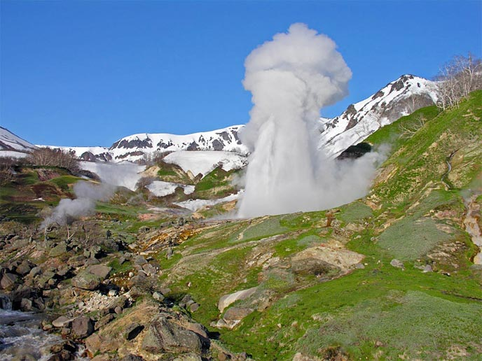

Мир год от года становится все более суетливым. Мы чаще
стали думать о возможности побыть наедине с собой в
окружении природы. Камчатка предоставляет нам такую
возможность — очутиться в далеком от цивилизации Мире
огнедышащих вулканов, поросших буйной зеленью склонов и
цветущих лугов, голубых снегов, гейзеров — гигантов и
холодных вод Тихого океана.
Жемчужину полуострова Камчатки — знаменитую Долину гейзеров, матушка-природа спрятала от людских глаз в труднодоступном ущелье столь искусно, что добраться сюда возможно только на вертолете, приобретая туры и экскурсии в Долину Гейзеров Камчатки.
ИСТОРИЯ ОТКРЫТИЯ ДОЛИНЫ ГЕЙЗЕРОВ
Долина Гейзеров открыта сравнительно недавно — в апреле 1941 года. Гидролог Кроноцкого заповедника Татьяна Устинова и проводник-ительмен Анисифор Крупенин поднялись по руслу реки Шумной, и войдя в узкий проход между скалами, остановились отдохнуть неподалеку от устья неизвестного притока.
В апреле всюду еще лежит снег. Расположившись на заснеженном склоне, путники решили перекусить. На противоположном берегу реки вдруг из проталины прямо в них ударила струя горячей воды. Перепуганные люди подхватились — надо спасаться! — впрочем, вскоре выяснилось, что кипяток до них не добивает, а дождь не опасен. Фонтан закончился так же внезапно, как и начался, и Устинова поняла, что перед ней настоящий гейзер — первый на Камчатке. Гейзер назвали — Первенцем.

ГДЕ НАХОДИТСЯ КАМЧАТСКАЯ ДОЛИНА ГЕЙЗЕРОВ?
Если хотите узнать, где находится знаменитая Камчатская Долина Гейзеров, взгляните на карту России, на полуостров Камчатка.
В самом сердце Камчатского края, на территории Кроноцкого заповедника, среди гор и вулканов и расположилась бурлящая долина с термальными источниками, гейзерами и горячими реками.